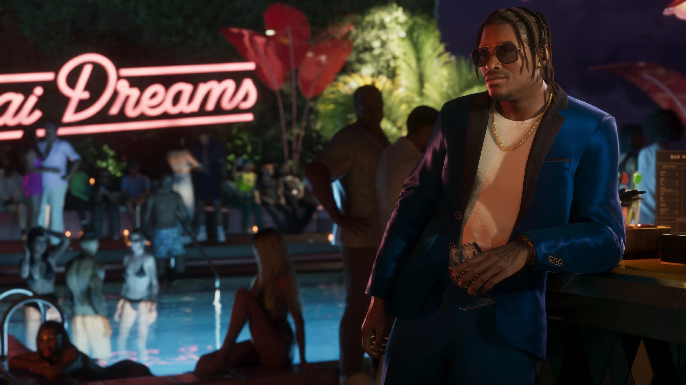
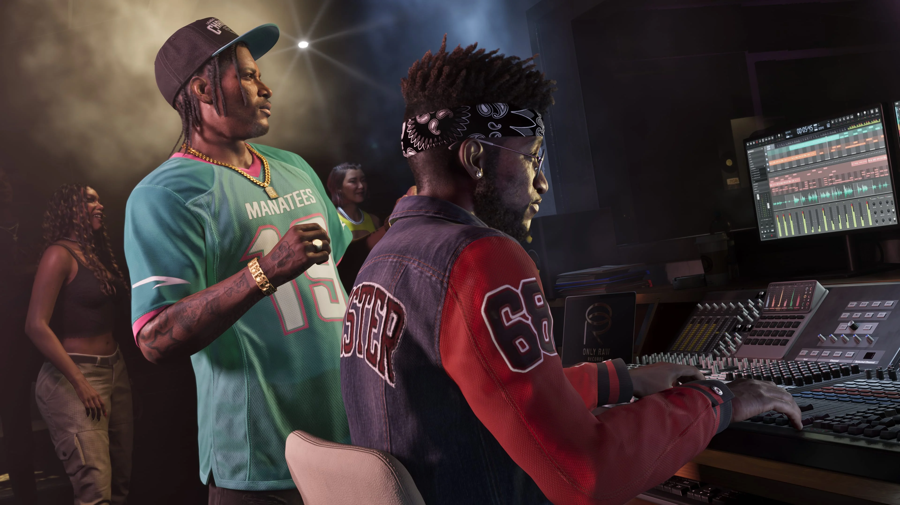

Boobie Ike
Boobie é parceiro de Dre'Quan na Only Raw Records e está especialmente investido no sucesso do projeto. Dre'Quan também vinha agendando atrações para o clube de Boobie.
Conhecer Boobie

Dre'Quan Priest é um personagem de Grand Theft Auto VI que sempre teve como objetivo entrar para a indústria musical. Agora, ligado à Only Raw Records, ele mira a cena de Vice City.
A Rockstar apresenta Dre'Quan como alguém mais próximo de um hustler do que de um gangster. Mesmo quando vendia nas ruas para conseguir pagar as contas, a música continuava sendo seu verdadeiro objetivo.
Dre'Quan sempre quis entrar para o mercado musical. Esse objetivo continuou presente mesmo quando ele precisava vender nas ruas para conseguir se sustentar.
A descrição oficial diferencia Dre'Quan de um gangster tradicional: ele é apresentado principalmente como alguém que sabe se virar e que está tentando transformar essa disposição em uma oportunidade na música.
Sua trajetória está diretamente ligada a Boobie Ike, um empresário de Vice City que possui, entre outros negócios, um clube e um estúdio de gravação.
A parceria dos dois na Only Raw Records coloca Dre'Quan no centro de um dos núcleos musicais já apresentados oficialmente para GTA VI.

Para Dre'Quan, a música não é apenas mais um negócio. A apresentação oficial deixa claro que entrar nesse mercado sempre foi seu objetivo.
Antes de mirar uma posição maior na cena de Vice City, ele vinha agendando atrações para o clube de Boobie Ike.
Esse trabalho o mantinha próximo de artistas, DJs e da vida noturna, ao mesmo tempo em que Dre'Quan tentava construir um caminho próprio dentro da indústria.
Com a Real Dimez agora contratada, sua atenção está cada vez mais voltada para a cena musical de Vice City.
A Only Raw Records é o projeto que liga Dre'Quan diretamente a Boobie Ike.
A Rockstar descreve Boobie como especialmente investido nessa parceria com o jovem aspirante a magnata da música. Para os dois, o próximo passo é encontrar um sucesso capaz de impulsionar a gravadora.
Dre'Quan já conseguiu contratar a Real Dimez, dupla formada por Bae-Luxe e Roxy, para a Only Raw Records.
A ligação entre Dre'Quan, Boobie e Real Dimez cria um núcleo que mistura música, negócios e vida noturna dentro de Vice City.
Relações mencionadas diretamente nos materiais oficiais do núcleo musical de Grand Theft Auto VI.
Boobie é parceiro de Dre'Quan na Only Raw Records e está especialmente investido no sucesso do projeto. Dre'Quan também vinha agendando atrações para o clube de Boobie.
Conhecer BoobieBae-Luxe e Roxy formam a Real Dimez. A dupla foi contratada por Dre'Quan e está assinada com a Only Raw Records.
Conhecer Real DimezSeleção de screenshots oficiais de Dre'Quan Priest publicados pela Rockstar Games.
Esta área reúne somente informações apresentadas oficialmente para o personagem.
Entrar para a indústria musical sempre foi o objetivo de Dre'Quan.
Dre'Quan chegou a vender nas ruas para conseguir pagar as contas enquanto perseguia seu objetivo musical.
Dre'Quan mantém uma parceria com Boobie ligada à Only Raw Records.
Dre'Quan vinha agendando atrações para o clube de Boobie Ike.
Dre'Quan contratou a dupla Real Dimez, formada por Bae-Luxe e Roxy.
Depois de assinar a Real Dimez, Dre'Quan está mirando a cena de Vice City.
As informações e imagens desta página são baseadas em materiais oficiais publicados pela Rockstar Games.
Página oficial que apresenta Dre'Quan Priest, sua ambição musical, sua relação com Boobie Ike e a contratação da Real Dimez.
Ver perfil oficialBiblioteca oficial de mídia da Rockstar Games, com quatro screenshots identificados como Dre'Quan Priest.
Ver screenshots oficiais